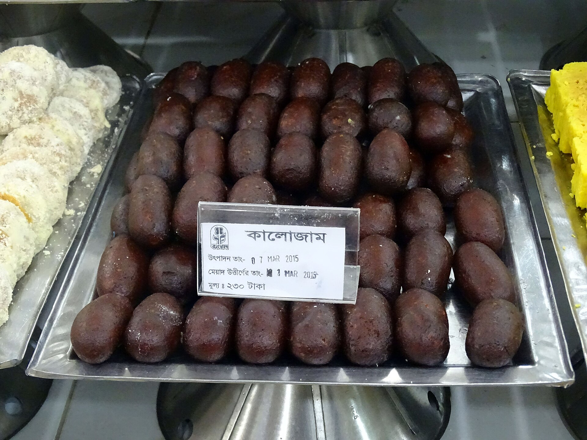

Home
Kalo-Jam

Description
Kalo Jam is a classic Bangladeshi sweet made from mawa (solidified milk solids), chhena (fresh paneer), and flour kneaded into a smooth dough. Small oval or round dumplings are shaped from the dough and slow-fried in warm ghee or oil until they develop a rich, signature dark reddish-black outer crust.
Once fried, the hot dumplings are soaked in a warm sugar syrup infused with cardamom pods and rose water. The syrup penetrates deep into the sweets, creating a soft, juicy interior wrapped inside a firm, caramelized outer layer that is best enjoyed at room temperature or slightly warm.
- Mawa (Khoya): 1 cup, grated
- Chhena (Paneer): 1/2 cup, crumbled
- All-purpose flour (Maida): 2 tablespoons
- Semolina (Suji): 1 tablespoon
- Baking powder: 1/4 teaspoon
- Ghee or oil: For deep frying
- Sugar: 2 cups
- Water: 2 cups
- Cardamom pods: 3–4, lightly crushed
- Rose water: 1 teaspoon
- Knead mawa, chhena, flour, semolina, and baking powder together until smooth and crack-free.
- Divide the dough into small portions and roll them into smooth oval or cylindrical shapes.
- Prepare the syrup by boiling sugar, water, and crushed cardamoms together for 5 minutes, then stir in rose water and keep warm.
- Heat ghee or oil in a deep pan over low heat and add the dumplings without overcrowding.
- Fry slowly on low heat, turning gently until the outer layer turns a uniform deep dark brown.
- Remove the fried sweets and immediately drop them into the warm sugar syrup.
- Let the Kalo Jam soak for at least 2 to 3 hours to absorb the syrup fully before serving.